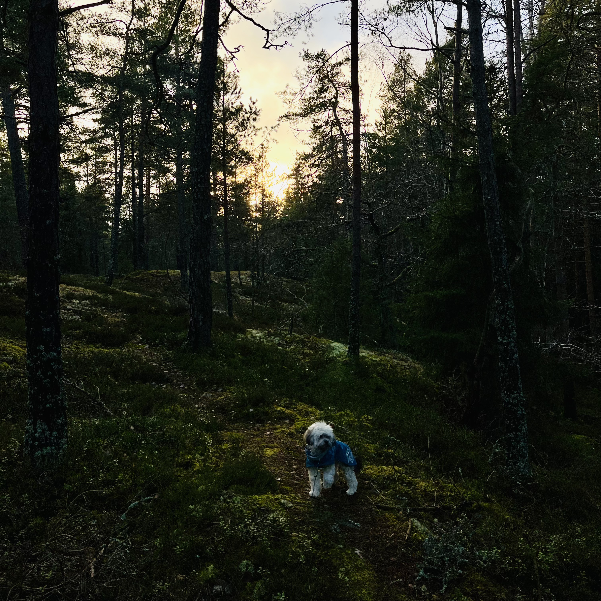

About me
 I’m a Frontend Developer student at Hyper Island in Stockholm. With a
background in UX and
customer experience, I’m now focusing on building my technical skills and learning to create engaging,
accessible, user-friendly web solutions.
I’m a Frontend Developer student at Hyper Island in Stockholm. With a
background in UX and
customer experience, I’m now focusing on building my technical skills and learning to create engaging,
accessible, user-friendly web solutions.
I live in Stockholm with my partner and our dog. In my free time, I like being outdoors, knitting, or
listening to a good audiobook while walking the dog.
Learning, Creating, Living
-
Tech Journey
My background in UX and CX research taught me how to understand people and their needs. Now I’m building on that knowledge by learning code, so I can create the solutions I once only sketched out.
-
Knitting & Creativity

I love knitting and experimenting with patterns, and I’m part of several social knitting communities. I enjoy exploring different forms of crafting, and I find a playful curiosity every time I sit down to
-
Everyday Life
I live next to the forest and enjoy spending time outdoors—walking our dog, running on the trails, or simply being in nature. I’m also a certified diver, which lets me explore a very different side of nature.